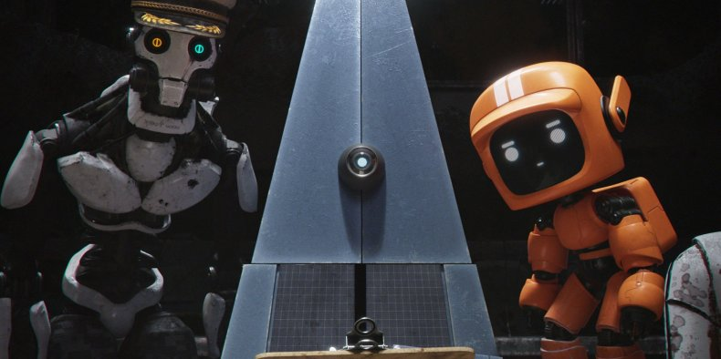

Why should we teach writing in an AI-driven world?
Joaquín Córdova Padilla, 2024
Our society is both excited and terrified with each new piece of news about the power of Artificial Intelligence, and many are questioning whether their jobs will have any practical value in the future. In the past, many authors—both socialists and capitalists—imagined a future where machines would take over our more mechanical tasks, but today, Artificial Intelligence poses a risk primarily in the humanities. From the Hollywood actors' union protests to the scandal involving the scientific journal Frontiers, the new technology is always a topic of conversation. Some label their fear as another case of neo-Luddism, while others see it as a deliberate call for caution.
While AI is a sword of Damocles in the labor sector, in classrooms, it’s the solution to any assignment. There’s practically an app for every task a teacher might assign: Mathway for Math problems, ChatGPT for Literature essays, Gemini for History research... Many schools have already updated their student codes of conduct to include AI in cases of plagiarism. Many teachers have chosen to censor all technology and have opted to return to pencil and paper.
Young people believe that the future awaiting them outside the classroom isn’t any better. Many of them envision a near-future dystopia where a robot will hold the top positions. I believe it is essential that our education, regardless of the field we work in, redefines what it means to be human. No one views a calculator as the creator of an engineering project, but merely as a tool. Perhaps we are dazzled by computers just as chess players were by Deep Blue—the machine capable of defeating the human mind—but we will continue to value flesh-and-blood players like Garry Kasparov.